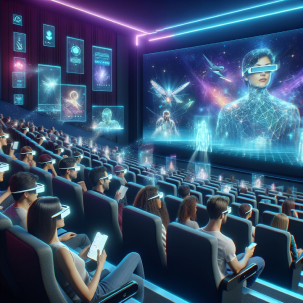
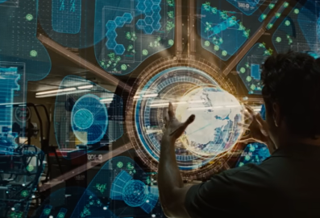
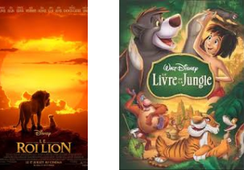
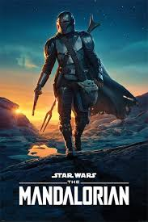
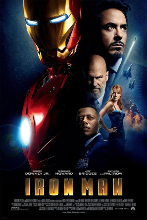
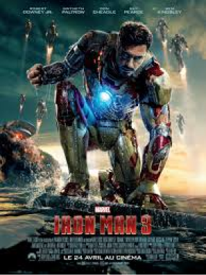
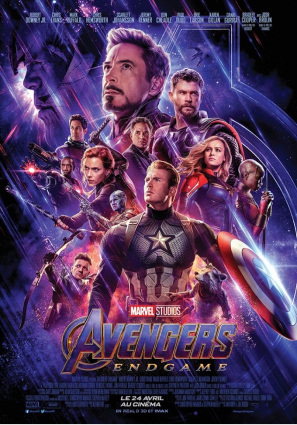

Jon Favreau, le réalisateur,Visionnaire de l'immersion cinématographique
Plongez dans l'univers créatif de Jon Favreau, un des talents les plus polyvalents et influents du cinéma contemporain. Né le 19 octobre 1966 dans le Queens à New York, Favreau a su se forger une carrière impressionnante en tant qu'acteur, réalisateur, producteur et scénariste. Il a réalisé les récents film Avengers ainsi que les Iron Man, et il a également joué dedans en tant qu’acteur.
Du cinéma à la réalité augmentée
Favreau a commencé sa carrière comme acteur, mais c'est en tant que réalisateur qu'il a véritablement marqué l'industrie du divertissement. Son parcours illustre une progression constante vers des expériences visuelles toujours plus immersives, préfigurant notre vision d'une télévision qui transforme physiquement l'espace.

Cinéma inspiré de la télévision du futur
Pionnier des effets visuels révolutionnaires
Favreau s'est distingué par son utilisation innovante des effets visuels, notamment dans des films comme "Iron Man" (2008) et "Iron Man 2" (2010). Ces productions ont jeté les bases de l'Univers Cinématographique Marvel, démontrant sa capacité à créer des mondes crédibles et immersifs

Image du film Iron Man 2 où Tony Stark manipule un hologramme
De l'écran à l'environnement
Son travail sur "Le Livre de la Jungle" (2016) et "Le Roi Lion" (2019) a poussé encore plus loin les limites de l'immersion visuelle. Ces films, utilisant des technologies de pointe en matière d'animation et de capture de mouvement, ont créé des environnements si réalistes qu'ils semblent presque tangibles - une approche qui résonne fortement avec notre concept de télévision transformant l'espace physique

La réalisation de "The Mandalorian" (2019) par Favreau marque un tournant décisif vers notre concept de télévision immersive. L'utilisation de la technologie StageCraft, un environnement de tournage utilisant des écrans LED pour créer des décors virtuels en temps réel, est particulièrement pertinente.

Innovations de Jon Favreau
- Créer des environnements numériques photoréalistes en temps réel
- Offrir une immersion totale aux acteurs et à l'équipe de tournage
- Produire des effets visuels complexes sans écran vert
Cette innovation représente un pas de géant vers la réalité augmentée immersive que notre télévision du futur cherche à atteindre.
Jon Favreau est un choix excellent pour illustrer le concept de la télévision du futur, car son travail incarne parfaitement l'innovation technologique et l'immersion visuelle.
D'autres films réalisés par Jon Favreau
Iron Man 1

Le prédécesseur du film choisi, Iron Man 1 où Tony Starks crée sa célèbre armure et qui lui permettra de fuir ces ravisseurs et de rentrer aux Etats-Unis.
Iron Man 3

Le successeur du film choisi, Iron Man 3 où Tony Stark, alias Iron Man, début une vie confortable mais sa maison est détruite par le chef d’une organisation détruite puis sa compagne est disparue, il part à la poursuite de chef.
Avengers Endgame

Le dernier Avengers réalisé, Avengers Endgame. Thanos, ayant réussi à dérober les six pierres d’infinités pour son gant doré a décimé la moitié de la population, mais Ant-Man, ayant réussi à s’échapper de la dimension où il y était bloqué et proposera aux Avengers une solution pour sauver le monde.
Si vous souhaitez en apprendre plus sur Jon Favreau, cliquez ici
Si vous souhaitez accéder à l’article concernant le film Iron Man 2, cliquez ici
Si vous souhaitez accéder à l’article concernant l’objet du futur où le site est concentré, cliquez ici